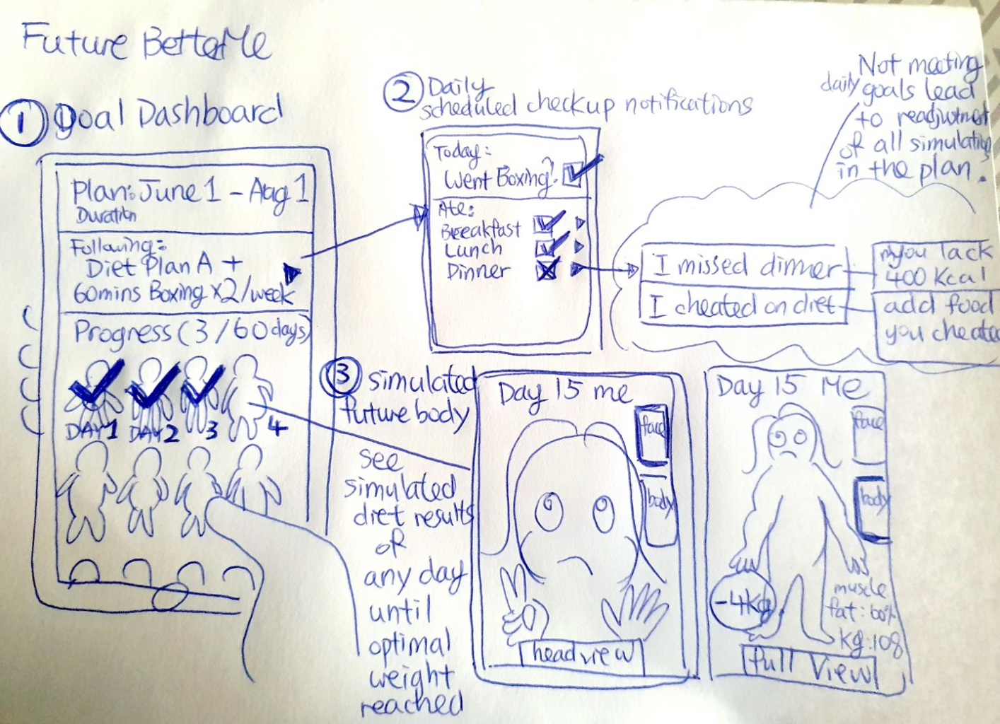
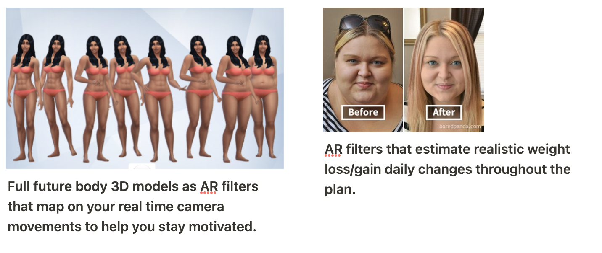
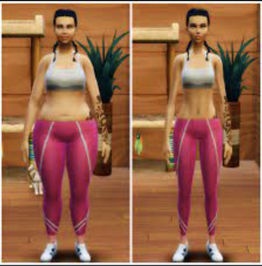
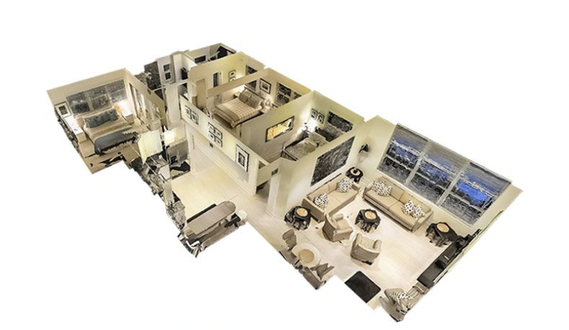
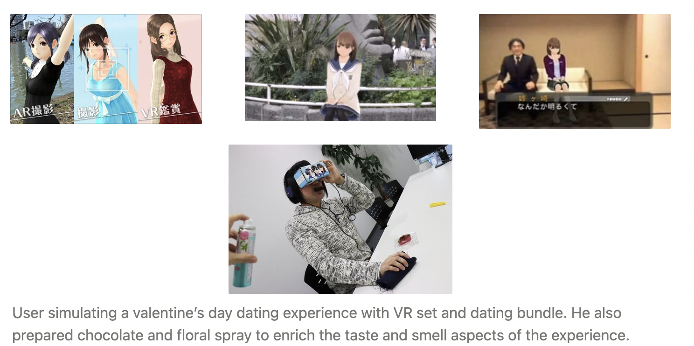
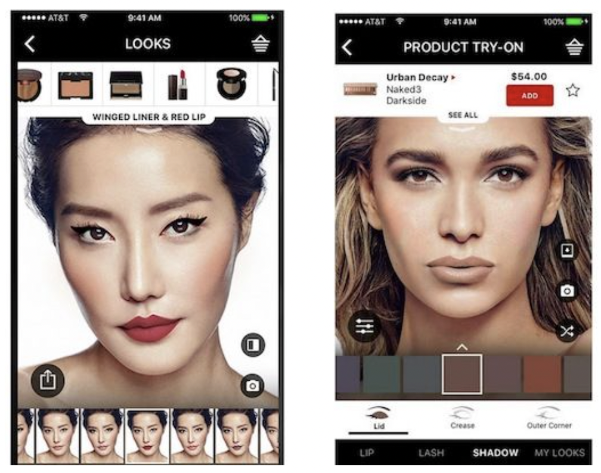

Create a New concept:
FutureBetterMe - Sports / healthy lifestyle management App


Weight management continues to be a tricky topic for modern lifestyle. A lot of times people give up on their plans because results can be ambiguous and underwhelming in a week or two. We try to lose weight to see a healthier, glowed up self, however, usually what we can see are cold, fluctuating numbers from weight scale and wearables and its hard to relate those figures to ourselves. What if you could visualise and simulate your everyday physical changes as you follow a diet plan up until the day you reached your ideal weight?
FutureBetterMe is a AR powered visualised goal setting planner and tracker dedicated to physical health. Users will first scan their face & body with a 3D camera and input their personal data(muscles, fat, height and weight) from devices like Fitbit into the app. With these inputs the system will build a 3D model, a filtering AR mask that you can try-on to see how you will look like on Day 64, if you followed through your diet plan(several free/paid options designed by dieticians, you can also switch individual food from the app’s food library to match real life alternations) and the specific type of regular exercises. Cheat days or missing gym days can be added to modify simulation to provide an accurate result (if you ate 1 full week of Macdonalds, it will take extra days to see yourself reaching the ideal weight). When one have a clear, solid visualisation and expectation of how long it takes to reach an ideal result, it motivates them to continue.

Concept Sketch: Step into the AR filter that simulates the Day 15 dieting version of you to see how you look in future from a close-up view and a full body view, along with other health metrics predictions. Expect for a prolonged numbers of days to meet your ideal body if you cheated with extra McDonald's meals, sugary drinks or mid-night cravings outside of your diet meal plan.
Research on XR/AR/VR
a. Matterport
Artist/maker/company: Matterport

URL: [https://matterport.com/](https://matterport.com/)
Purpose: It is a technology that capture realistic 3D spaces that is proportional and accurate to the actual spaces. Users can immerse and explore immersive interactive 3D models of spaces that with virtual tour through VR devices. Users can browse houses online and get a realistic impression for the space and pre-eliminate areas that does not meet their expectations. This help users save time scheduling visits and only visit the ones that they have a high willingness for. On the other hand, owners or event organisers can promote, or help users understand the feeling of a space and discuss ideas and matters without scheduling meetings in person.
Describe how the concept/installation/work/product works technically:
User first download the Matterport Capture app, and connect to a 3D camera to scan the actual space. Matterport then uses its Cortex AI platform to scan the inputs into a realistic and proportional 3D model. Scans of different spaces are stitched together with objects within the spaces identified, eventually combining all elements into an interactive virtual tour where users can share comments and embed videos/photos with each other.
b. Love Plus: XR Virtual Dating Game

Artist/maker/company: Konami
**URL:** [https://www.konami.com/games/loveplus/every/](https://www.konami.com/games/loveplus/every/)
**Purpose:** In Japan, loneliness and isolation is a deeply rooted social issue due to various factors. The society relies heavily on technology, especially games to compensate for social voids. By developing emotional attachment and communication with virtual characters throughout an extended period of time through AR and VR dating scenes and dialogues, users can choose an augmented reality girlfriend to share a simulated, immersive pure romantic experience with.
The game aims to eliminate users’ lonely feelings of being single. It also allow users to experience something nostalgic, or to assist users who little experiences with romantic relationships in reality.
**Describe how the concept/installation/work/product works technically:**
This game is designed for Nintendo 3DS. Its augmented-reality feature recognises users’ environmental surroundings and objects with the 3DS's back-facing lenses, analyses the data, followed by inserting user’s virtual date right into the shot, where characters will animate and interact with the users according to different scenarios and dialogue in 3D spaces.
Purpose: As social distancing is becoming the new normal, technology holds the potential to bridge this societal gap through novel interaction modalities that allow multiple users to collaborate and create content together.
c. Sephora Virtual Artist

Artist/maker/company: Sephora
**URL:** [https://www.sephora.sg/pages/virtual-artist](https://www.sephora.sg/pages/virtual-artist)
**Purpose:** It is an app that provides a virtual makeover to users, recommending corresponding products, and enable users to share the results with friends. Users enjoy the freedom to try out a large variety of make up products that fits with their personal skin shade, style or outfit, without visiting the actual physical store. This will help save time spent on decision making or removing make up tryouts.
**Describe how the concept/installation/work/product works technically:**
This app applies AR technology that detects facial area locations. When users tap on the chosen product, the system layer AR filters that imitates product tryout results on top of the body parts.
Purpose: As social distancing is becoming the new normal, technology holds the potential to bridge this societal gap through novel interaction modalities that allow multiple users to collaborate and create content together.
Reflection on XR/AR/VR
I think it is a topic that is incredibly exciting in the sense that people can unlock a lot of new, different experiences such as traveling, education, mental & physical health, entertainment through simulations, as well as the ability to satisfy our curiosity and potentially revolutionise the way we empathise with the experience of others in a realistic and tangible way(imagine experiencing the life of a single mother, or children who went through human trafficking), but can also be morally challenging in the sense that with virtual worlds like Metaverse, there might be a point in future where it became hard to distinguish the fine line between actual reality and a constructed reality, where people become addicted a got lost in simulated life, as hinted by many Sci-fi fictions. In future I can see people shifting a portion of their lives into virtual reality which drives a new kind of consumption in our economy that is less reliant on exploiting physical resources, for example, virtual fashion items to fulfill one’s emotional needs for status and relatedness. The subject has met my expectations in the sense that it helped me understand more about different types of technology and existing examples of XR. However, I think it can be quite interesting to relate the technology back to UX, by discussing and explore some of the emerging potential careers and needs in the subject that could be fulfilled using the UX expertise.
The subject has met my expectations in the sense that it helped me understand more about different types of technology and existing examples of XR. However, I think it can be quite interesting to relate the technology back to UX, by discussing and explore some of the emerging potential careers and needs in the subject that could be fulfilled using the UX expertise.